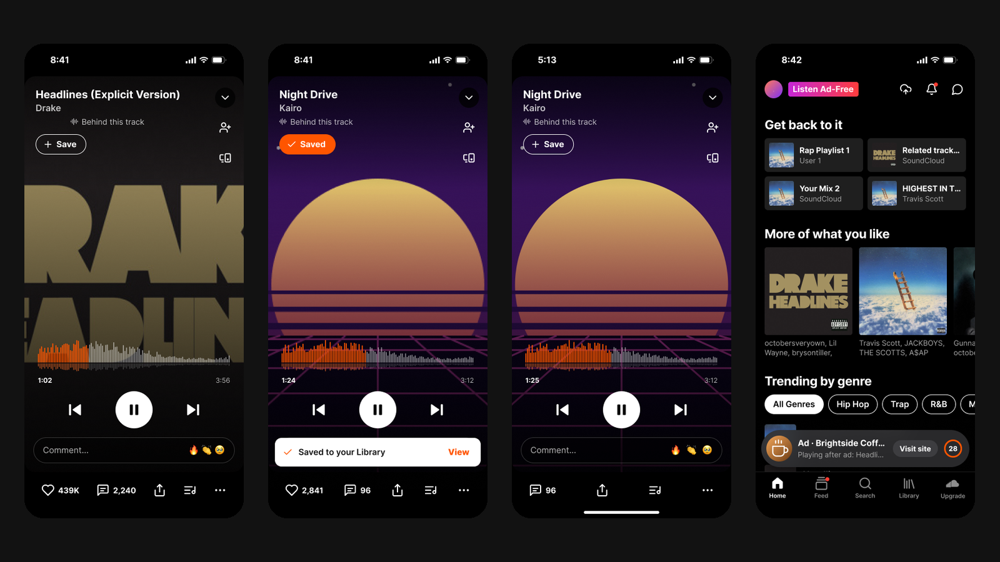
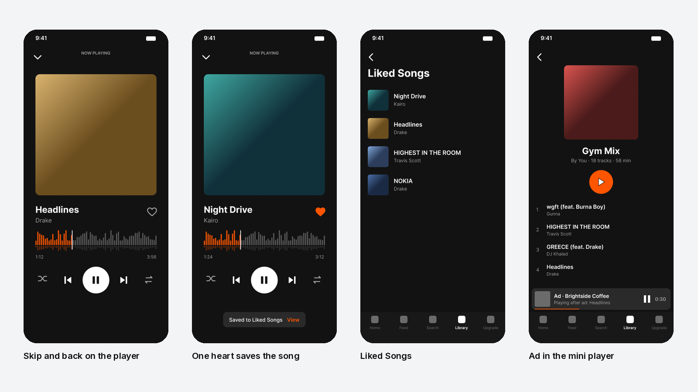
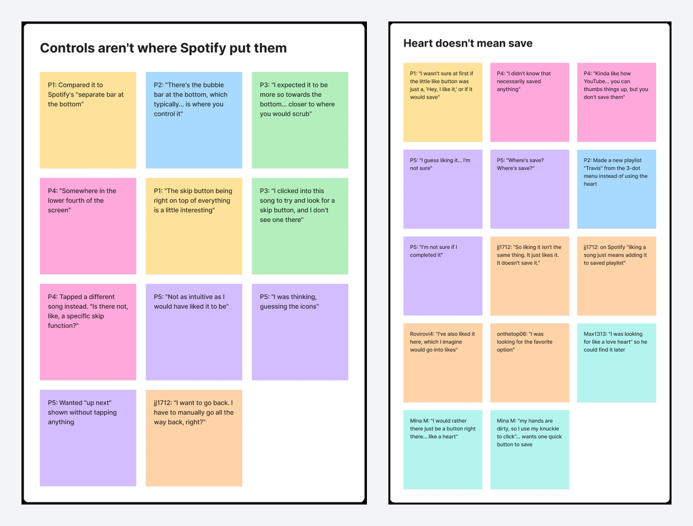
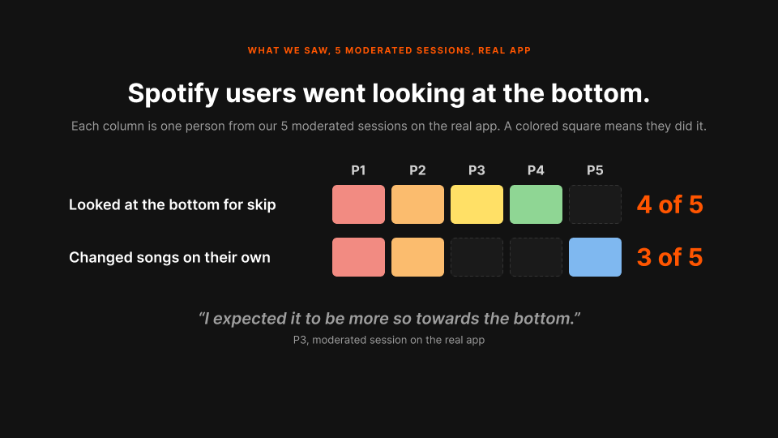
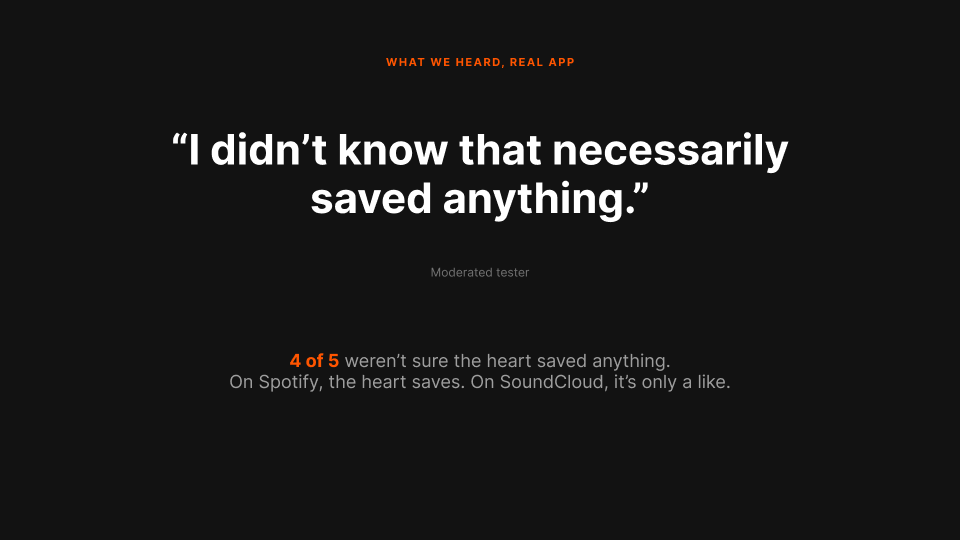
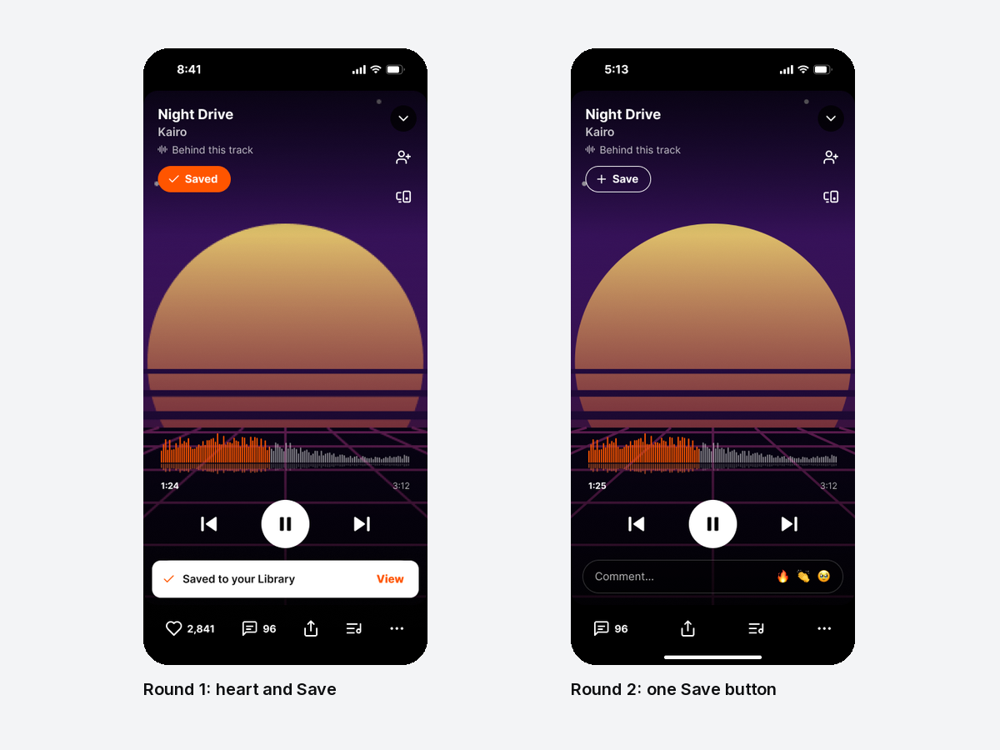
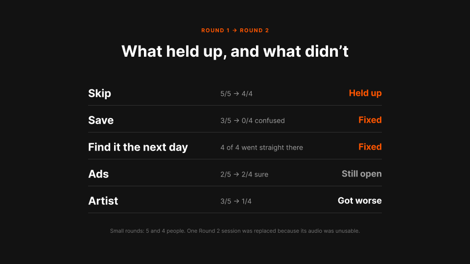

Why Spotify users get stuck on SoundCloud, and what fixed it
Role: UX Researcher and Designer · 3-person team · 10 weeks · UXDG 380

Overview
SoundCloud has music Spotify doesn't. But Spotify users who try it get stuck on the basics, like skipping a song or saving one.
Our three-person team tested the real app with Spotify users, redesigned the parts that broke their habits, and tested the redesign twice. I moderated a session and took notes and observed on multiple others, designed a test prototype, set up and piloted the unmoderated study, and pulled 14 sessions into the findings below.
Real app (5 moderated sessions) compared to our redesign (unmoderated Round 2, 4 people). Small groups, so these are strong signals and not final proof.
The challenge
People come to SoundCloud for songs they can't find anywhere else. Then years of Spotify habits get in the way. If someone can't control or keep the first song they play, the catalog doesn't matter, and they go back to Spotify.
We wanted to know where Spotify users get stuck in their first session, and whether small changes that match what they already know would fix it.
My role
The research was a team effort. These are the parts I owned.
Moderated, took notes, observed
I ran one of our five moderated think-aloud sessions on the real SoundCloud app as moderator, and was note taker and observer on multiple others.
Designed a test prototype
I built a Figma prototype where one heart saves the song, the way Spotify users expect it to.
Set up and piloted the study
I set up the unmoderated test and screener in UserTesting and ran two pilots before launch.
Synthesis and final story
I grouped quotes from all 14 sessions into an affinity map and worked on the final presentation and appendix.

My Figma prototype. Piloting it caught two problems before launch: a button on the saved message that did nothing, and a task that didn't say when it was done. I fixed both.
Research approach
- Heuristic review. We checked the real app first to predict where people would struggle, then rated each issue by severity.
- 5 moderated sessions on the real app. We needed to hear why people got stuck, so we watched Spotify users think out loud.
- Redesign. We changed only what the sessions showed was broken.
- 2 unmoderated rounds on our prototype (5 and 4 people). No moderator to help, so we could see if the fixes worked on their own. We kept the tasks the same in both rounds so we could compare.

Two of the 13 groups from the affinity map. Each sticky is one thing a participant said or did, colored by person and round.
Key findings
1. Skip isn't where Spotify users look for it. 4 of 5 looked at the bottom of the screen, where Spotify puts it. SoundCloud's full player has no pause or skip buttons.

2. The heart doesn't feel like saving. On Spotify the heart saves a song. On SoundCloud it's only a like. 4 of 5 weren't sure it saved anything.

3. Ads freeze the app. 5 of 5 had to stop and wait out an ad. The ad itself bothered people less than being stuck.
4. What already worked. 5 of 5 went straight to Library to find saved music, because it works like Spotify. We left it alone.
What we changed
- Back, pause and next buttons under the waveform, where Spotify users already look.
- One Save button. Our first version kept the heart and added Save. Having both confused 3 of 5 people in Round 1, so we removed the heart for Round 2.
- Ads in the mini player, so people can keep using the app while one plays.

Outcomes

Three fixes held up across both rounds. Two things are still open, and we said so:
- After an ad, only 2 of 4 were sure what would play next.
- Getting to the artist page got worse in Round 2, because the tappable artist name we planned didn't make the build.
Our recommendation: add the player buttons and one Save button now. Finish the ad flow and the artist link, then test again.
Impact
Skipping and saving happen on every song, and saved songs are what bring people back. Fixing those two removes the first reasons a Spotify user gives up.
The research also showed where design stops mattering. People rated the redesign easy to use, but still landed around 5 out of 11 on switching. What held them back was price, ads, and moving their library over. That gave the team a clear next thing to prototype: importing Spotify playlists at sign-up.
Reflection
Next time I'd pilot on a real phone with the timer running. In Round 2 the ad ended while some people were still reading the task, so part of that result came from our test and not the design. I'd also build the tappable artist name before testing it, not after.